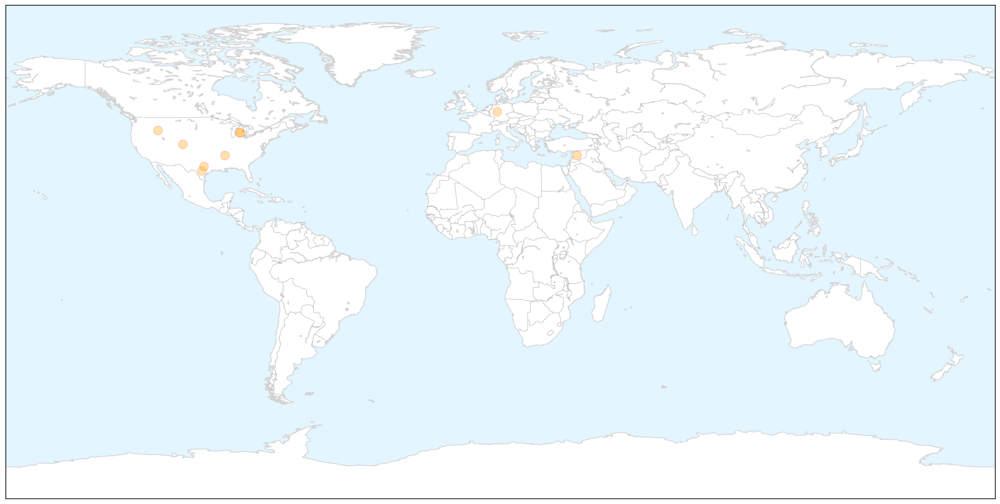
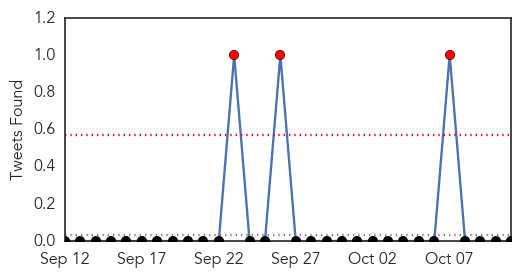
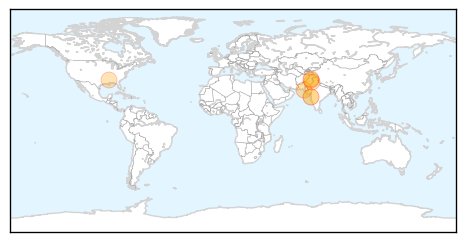
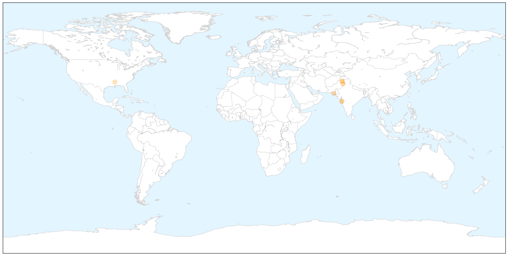
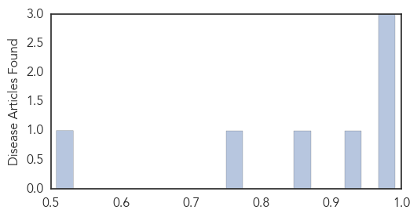

Influenza
30-Day Web Trend
4 alerts, 13 warnings

30-Day Twitter Trend
2 alerts, 0 warnings

Article Locations

X

Article Confidences

Top Articles:
- 0.999
- Time for flu fighters to get armed with shots
- 0.996
- Idaho reports first flu deaths of 2014
- 0.993
- Likely more enterovirus in Tennessee than the 2 reported
- 0.992
- Michigan toddler dies from enterovirus D68
- 0.988
- Farsnews
- 0.964
- As Ebola fears grow, memories of 1918 Spanish Flu that killed hundreds of Albert
- 0.951
- Texas health department reports increase in cases of flu
- 0.885
- Computerized surveillance system quickly detects disease outbreaks among preschoolers
- 0.855
- Do it yourself flu vaccine Study shows it works
Top Tweets:
-
No tweets found for Oct 11, 2014
Dengue Fever
30-Day Web Trend
1 alerts, 1 warnings

30-Day Twitter Trend
3 alerts, 0 warnings

Article Locations

X

Article Confidences
Top Articles:
- 0.991
- Overview: Rise in dengue cases raises alarm in Rawalpindi
- 0.974
- Deflecting responsibility? : Four dengue patients die in last three weeks
- 0.968
- Read Health News & Articles at TheHealthSite.com
- 0.927
- Public health: Dengue-control plan announced for Pindi
- 0.860
- Dengue cases toll reaches 225
- 0.772
- ‘All available resources being utilised in anti-dengue drive’
- 0.508
- Mumbai sees rise in dengue cases in October
Top Tweets:
-
No tweets found for Oct 11, 2014